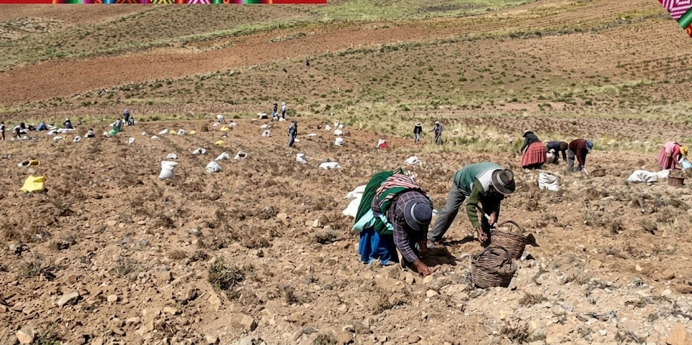
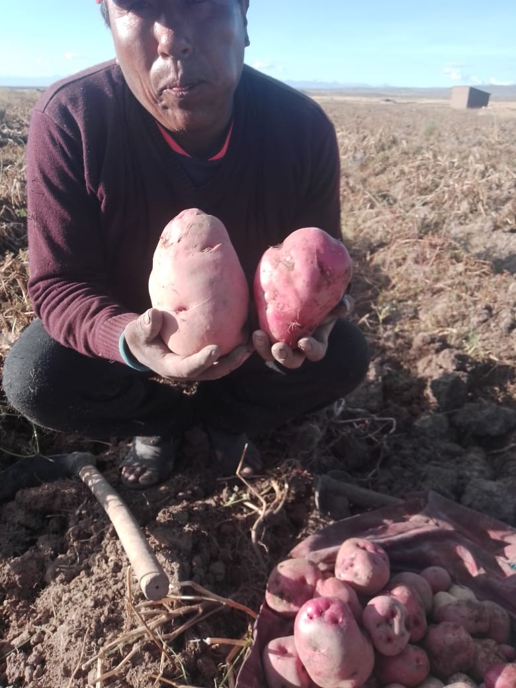
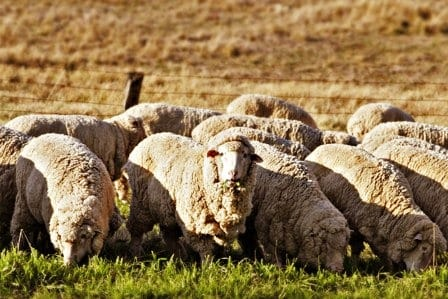
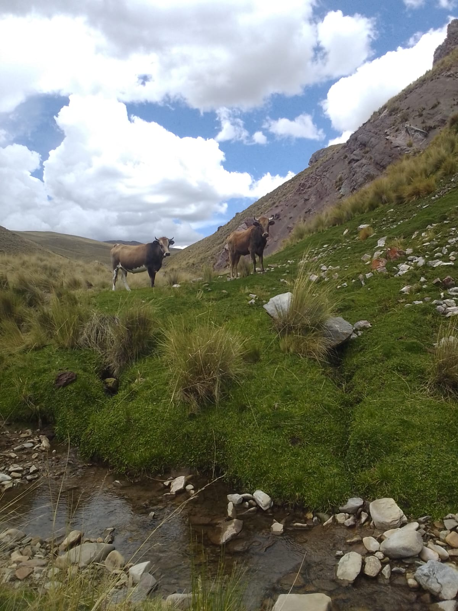

Trabajo en el campo
Las familias participan en las labores de recolección de la papa.
Conoce las actividades productivas de nuestra comunidad, especialmente la cosecha de papa y la crianza de ganado ovino.
La producción es una actividad importante para las familias de Colquencha. La cosecha de papa y la crianza de ovejas forman parte del trabajo rural y contribuyen al sustento de muchas familias.
La papa es un cultivo tradicional del altiplano. Su cosecha requiere el trabajo de los productores y representa una actividad importante para la alimentación familiar.

Las familias participan en las labores de recolección de la papa.

La cosecha permite recoger los tubérculos cultivados durante la temporada agrícola.
La crianza de ganado ovino consiste en el cuidado de ovejas y forma parte de las actividades ganaderas de las comunidades rurales.

El ganado ovino forma parte de las actividades productivas de las familias.

El ganado ovino forma parte de las actividades productivas de las familias.
La cosecha de papa y la crianza de ganado ovino representan el esfuerzo de las familias productoras. Estas actividades contribuyen a la alimentación, al sustento familiar y a la economía local.